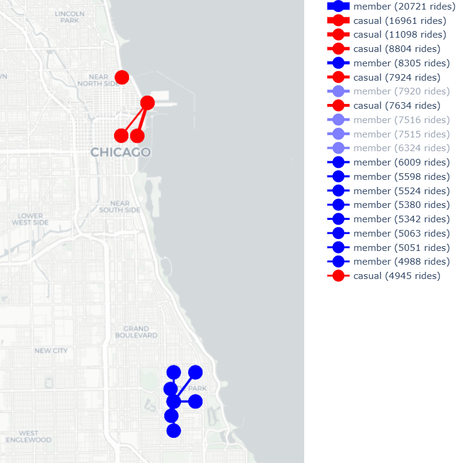

🚴 Cyclistic Data Analysis Report
Historical Trip Data Analysis for Membership Conversion Strategy
Analyze historical trip data to identify trends between casual riders and annual members in order to drive membership conversions.
1. Project Overview & The Ask
Casual riders are profitable, but annual members are the key to long-term growth.
- How do annual members and casual riders use Cyclistic bikes differently?
- Why would casual riders buy Cyclistic annual memberships?
- How can Cyclistic use digital media to influence casual riders to become members?
2. Data Preparation
Historical trip data from Cyclistic's bike-share system, including:
- Bike type used
- Trip starts and ends date and time
- Start and end station locations with GPS (latitude and longitude)
- Rider type (casual vs. annual member)
| Column Name | Missing Count | Missing % |
|---|---|---|
| Ride ID | 0 | 0% |
| Rideable Type | 0 | 0% |
| Start station name | 785,465 | 8.60% |
| Start station ID | 786,088 | 8.60% |
| End station name | 850,051 | 9.30% |
| End station ID | 850,512 | 9.31% |
| start_lat | 0 | 0.00% |
| start_lng | 0 | 0.00% |
| end_lat | 9,026 | 0.10% |
| end_lng | 9,026 | 0.10% |
| Member_casual | 0 | 0% |
Classic Bikes must be returned to a physical dock. Therefore, their coordinates almost always perfectly match a station location.
Electric Bikes are "dockless." Riders can park them at any public bike rack. Because there are thousands of bike racks in Chicago that are not official Divvy stations, these trips will have valid coordinates but no station record.
These coordinates are in the Far South Side of Chicago (near West Pullman/Roseland). In these neighborhoods, the distance between official stations is much larger than in the Downtown/Loop area.
Riders in these areas often use the "lock-to" feature on e-bikes to park closer to their actual destination rather than walking several blocks to a station.
A trip lasting more than 24 hours is usually considered a "Data Anomaly." This happens when a user (often a Casual rider) reaches their destination but doesn't push the bike into the dock hard enough to hear the "beep."
If a bike is taken and not returned to a station, the "trip" technically stays open in the database. Eventually, the system "force-closes" the trip after a certain period (24 hours) and marks the bike as missing.
- 📁 Standardize File Naming (2020 Q1) Trip data used different naming convention → standardized for consistency
- 🔧 Rename Inconsistent Data (August 2020) Corrected column names and formats
- 🔌 Recover Missing E-Bike Station Data Assigned "Public Rack" (name) and -99 (ID) for dockless e-bikes
- 📍 Fill NULL Stations with Coordinates Populated from master station reference file
- 🗑️ Remove Ghost/Invalid Data Removed test entries (e.g., "hubbard_test_lws") without valid IDs
- 🔍 Cross-Reference Missing Station IDs Matched names with reference data from other trips
- ⚠️ Remove Outliers (>24 Hours) Trips from improper docking or potential theft

- 2020 Q1–Q2: 100% "Docked" bikes
- 2020 Q3: ⚡ Electric bikes introduced
- 2021: "Docked" → "Classic" (same bike, renamed!)
💡 Data Cleaning Note: "Docked" and "Classic" represent the same physical bike. The name change in the database reflects a rebranding, not a fleet replacement. Always investigate category shifts before assuming real-world changes!
🔄 Standardization Decision: We consolidated the variable docked_bike
as classic_bike for all future analysis. While 2020 data was reviewed, this study
focuses on 2021–2022 because:
- Represents the stabilized post-transition fleet (Classic + Electric)
- Avoids behavioral outliers from early-2020 global lockdowns
Summary: 10,629 rows (0.094%) had missing end station data.
duration_min > 480 AND end_station_name IS NULL
Reality: Bikes likely never returned, or were manually docked by a technician a day later.
duration_min < 480 AND end_station_name IS NULL
Reality: User likely tried to dock, but hardware failed to record the "End Event."
🔖 Archival: These 10,629 rows were stored separately for future investigation
and were not permanently deleted.
🔐 "Off-Dock Returns" for Classic Bikes: Classic bikes require physical docks, but when stations are full or riders are in a hurry, they may use the secondary cable lock to secure the bike to a nearby object (light pole, sign) next to the station. We labeled these as "Off-Dock Returns".
✅ Less than 0.1% data removal ensures minimal impact on analysis validity.
3. Data Analysis
- 📏 Distance: Annual members ride much shorter distances than casual riders, see Fig. 1.
- 🎯 Purpose: Annual members use bikes mostly for commuting, see Fig. 2, the peak appears around 8:00 and 17:00.
- 📅 Timing: Members are "Workers" (Mon–Fri peaks) and Casuals are "Explorers" (Sat–Sun peaks), see Fig. 3.


Weekly Distribution: User Patterns & Trip Length

Key Findings
- Sharp Spikes: Popular station routes create identical distances
- Long Rides: 6+ km rare but indicate adventurous users
- Circular Trips: 0 km spike = same start/end station
- Summary: Members are highly predictable and stick to the most popular "commuter corridors." Casual riders are less "clustered."
- Overlap: The purple area represents where the behaviors of both groups are identical. Below 4 km, the behaviors are somewhat similar, but above 4 km, both groups drop off at a nearly identical rate.

Key Findings
- Members: Students and faculty are the ultimate "Members." They use Divvy as their primary transit to get from the Metra train station to campus, or from dorms to labs.
- Casuals: Casual riders (tourists or locals on a weekend) go to Navy Pier, grab a bike, ride the "Loop" along the water, and bring it back.
| Route | User Type | Total Rides | Pattern |
|---|---|---|---|
| UChicago (South) → UChicago (North) | Member | 8,305 | 🚴 Go (Commute) |
| UChicago (North) → UChicago (South) | Member | 7,515 | 🏠 Return (Commute) |
| UChicago (South) → UChicago (Central) | Member | 7,920 | 🚴 Go (Commute) |
| UChicago (Central) → UChicago (South) | Member | 7,516 | 🏠 Return (Commute) |
| Navy Pier Loop (Start=End) | Casual | 16,961 | 🎡 Leisure Loop |
| Millennium Park Loop (Start=End) | Casual | 11,098 | 📸 Sightseeing |

Dockless Bike Revolution: "Public Rack" Phenomenon
The "Public Rack" stations (created for electric bikes not parked in traditional stations) have by far the highest number of rides for both groups.
Members: Downtown & Business District
- Kingsbury St & Kinzie StTech Offices & River North
- Clark St & Elm StDense Residential + Commuting
- Canal St & Adams StUnion Station Area
- Dearborn Pkwy & Delaware PlDowntown Residential Zones
- Daily commuting
- Work-related travel
- Repeat usage patterns
- Last-mile short commuting
Casual Riders: Tourist & Leisure Areas
- Millennium ParkFamous Landmark (The Bean / Cloud Gate)
- Michigan Ave & Oak StShopping District (Magnificent Mile)
- Streeter Dr & Grand AveNear Navy Pier
- Shedd AquariumMajor Tourist Attraction
- Tourism & sightseeing
- Leisure activities
- Weekend recreation
- One-time/occasional use
4. Spatial Analysis: Heatmaps
Interactive heatmaps showing station usage patterns for casual riders and annual members.
Fig. 5: Geographic distribution of casual rider trips
Fig. 6: Geographic distribution of member trips
Summary
Casual riders cluster around tourist and recreational areas, while members concentrate around commuting corridors and residential zones.
Answers to Key Questions:
-
1. Usage Differences:
Members primarily use bikes for “last-mile” connectivity, with peak usage likely occurring during weekday commuting hours (around 8:00 AM and 5:00 PM). Their routes are predictable and concentrated in commuting corridors and residential areas.
Casual riders, on the other hand, tend to have longer trip durations, often using bikes for sightseeing or weekend recreation. Their usage peaks during weekends and favorable weather conditions, indicating a leisure-oriented pattern rather than routine travel. -
2. Why Casual Riders Would Buy Memberships:
Casual riders are more likely to convert to members when they use the service frequently (e.g., more than 3–4 rides per month), as the membership becomes cost-effective.
Additionally, the availability of bikes—especially through flexible options like "Public Rack"—reduces friction in starting a ride. When bikes are easily accessible near home or work, users are more likely to adopt a subscription model. -
3. Digital Media Strategy:
Cyclistic can leverage location-based and behavior-driven digital marketing to convert casual riders. For example:- Trigger mobile ads or app notifications when non-members spend time in high-traffic commuting areas.
- Target users who take more than three casual trips per month with personalized offers highlighting cost savings.
- Use digital campaigns at transit hubs to emphasize the time-saving benefits of biking compared to public transport.
Specials:
| User Type | Total Rides | Total Minutes | Avg. Duration (Min) |
|---|---|---|---|
| Casual | 4,842,378 | 127,301,800 | ~23.5 |
| Member | 6,409,773 | 82,433,290 | ~12.2 |